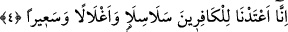
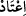

4. Doğrusu biz, kâfirler için zincirler, demir halkalar ve alevli bir ateş hazırladık.
“Doğrusu biz,” kendilerine doğru yolu gösterdiğimiz ferdlerden “kâfirler için”
kendisiyle cehenneme sürüklenecekleri “zincirler,” kaçmalarından korkulduğu için
değil, hakâret ve işkence için bağlandıkları “demir halkalar ve alevli bir ateş
hazırladık.” Yâni âhirette onlara bu sayılanları hazırladık. “Hazırlamak” anlamına
kullanılan “__WORD__ kelimesinin kökü olan “__WORD__ herhangi bir şeyi hazır etmek demektir ki,
sonunda, ihtiyaç duyulduğu esnâda mevcûd bir hâle gelmiş olur.
Keşfu’l-esrar’da bu âyet-i kerîme şöyle tefsir olunuyor: Biz cehennemde kâfirler için
demir zincirler hazırladık. Her bir zincirin boyu yetmiş arşın uzunluğundadır.
Zincir anlamında kullanılan kelime âyette “selâsil” olarak geçmektedir. Bu kelimenin
tekili; “silsile” şeklindedir. Fiil olarak bu kök; “teselsele” şeklinde kullanılır ki anlamı
“herhangi bir şey harekete geçti” demektir. Kelime kullanıldığında insana bir gelip
gitme, bir teselsül imajı vermektedir. İşte bu lafızdaki gelip gitme imajı aynı şekilde
dikkatleri kelimenin mânâsına çekmektedir. Kamus’un açıklamasına göre “selsele”
kelimesi, herhangi bir şeyi bir başka şeye bitiştirmek demektir. “Silsile” ise demirden
ve benzeri maddelerden dâire şeklinde yapılmış zincir anlamındadır.
“Ağlâl” kelimesi “gull” kelimesinin çoğuludur. “Ğull” ise birisine işkence etmek
üzere onun boynuna vurulan demir halka demektir. Bu kelimenin ayrıntılı açıklaması
“el-Hakka” sûresinde geçmişti.
“Sa’îr”, kâfirlerin kendisiyle yakıldığı ateş demektir. Yâni orada öyle bir ateş
yakılmıştır ki kâfirleri devamlı onda yakarlar.
Kâfirlerin zincirlere vurularak cehenneme sürüklenmeleri, Hakk’a boyun
eğmemelerinden; boyunlarına demir halkalar geçirilerek hakârete uğramaları, Allah’a
karşı tevazu içinde olmamalarından; cehennemde yakılmaları ise Allah korkusu ateşi ile
yanmamalarından dolayıdır.
Bu âyet-i kerîmede şu işâretler yer almaktadır: Allah Teâlâ, haktan mahcûb olup
halkla meşgul olan kimselere zâhiren dünya sevgi ve arzusuna bağlanma zincirleri,
bâtınen dünyayı arzulama ve isteme engelleri ve demir halkaları ve bu’d/uzaklık,
tard/kovulma ve lânet ateşi hazırlamıştır.
Yukarda kâfirle müslüman topluca sıralanırken önce müslüman sonra kâfir zikredildi.
Oysa bu âyette o sıraya uyulmayarak önce kâfire verilecek cezâdan bahsedilmektedir.
Bunun sebebini şu şekilde açıklamak mümkündür: Öncelikle yukarıdaki maksad bir
sıralama değil, müminle kâfiri birlikte zikretmektir. Öte yandan uyarıya öncelik
verilmesi daha önemli ve daha faydalıdır. Ayrıca böyle yapıldığında ifâdeye müminler
zikredilerek başlanmış ve yine müminler zikredilerek tamamlanmış olur ki, bu daha
güzeldir. Üstelik müminlerin anlatımında daha geniş bir tafsilat olacaktır. Onun için
müminlerin hâlinin öne alınıp tafsilatıyla anlatılması belkide ilâhî ifâdenin iki başındaki